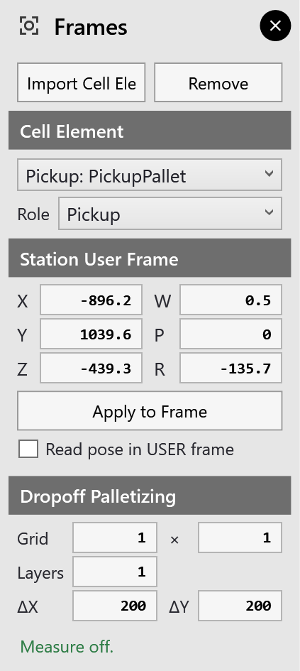

Frames and roles
The Frames panel places each cell element and gives it its role. There are three ways to open it:
-
settings ▸ Frames;
-
click a cell element in the 3D view, and the panel opens beside it;
-
add a library item, a machine or a pallet, and it opens by itself.

Choosing the element
-
Cell Element lists every element as role: name, for example Pickup: PickupPallet. The panel works on the element chosen here.
-
The selected element is drawn in blue in the 3D view, with a line from the world origin to its frame.
-
Import Cell Element… imports another element from a file; Remove deletes the chosen one.
Giving it a role
Pick the role in Role. It applies at once. What each role means is explained in Setting up the cell.
Placing it: the Station User Frame
The six fields hold the element’s station user frame:
-
X, Y, Z are the position, in mm;
-
W, P, R are the rotation, in degrees;
-
both are measured in the robot’s world frame, as a FANUC controller holds them.
To move the element:
-
Type the values. Tab walks through X, Y, Z, W, P, R.
-
Press Enter, or click Apply to Frame.
The element moves to the new frame, and the status line confirms it, for example 'PickupPallet' user frame set to (…).
-
There is no dragging. Elements are placed by their frame values only. Take the values from the real cell, for example from the frames taught on the controller.
-
Elements that overlap are drawn in red, and the status line warns ⚠ Cell elements overlap: A ↔ B.
-
Read pose in USER frame: tick it, and the Jog panel shows the robot’s position relative to the chosen station instead of the world frame.
|
Note
|
Moving a station, or changing its role, does not re-plan a solution that is already open. Click recompute on the rail afterwards: see Re-planning. |
Dropoff Palletizing
For an element with the role Deposit, these fields set how parts are put down on it, one place after another:
| Field | What it sets |
|---|---|
Grid … × … |
How many places along X and along Y |
Layers |
How many layers are stacked |
ΔX, ΔY |
The clear gap between two parts. The step from place to place is the part’s size plus the gap. |
The fields are always shown, but they only act on a Deposit element.
-
The pickup stack grows, if needed, to hold enough parts to fill the grid.
-
In a continuous run, the robot fills the grid part by part: see Simulation.
On the machine bed
For a machine with a bed, the panel also shows On machine bed. It sets where the part is put down for bending:
| Field | What it sets |
|---|---|
X, Y |
The part’s centre on the bed, from the machine’s origin |
Angle |
The part’s turn about its centre, from the machine’s X axis |
Instead of typing the values:
-
Click Pick on bed.
-
Click the spot on the machine’s bed. The part is put down centred on it.
If the part hangs over the bed, the status line says by how much. A click anywhere else cancels the pick.
Unlike moving a station, changing the place on the bed plans the cycle again, so waypoints you edited by hand are lost.
Seeing the frames
Each station’s frame is drawn as red, green and blue axes (X, Y, Z).
-
Turn them on or off with the Display panel’s Station frames switch.
-
World frame in that panel, or View ▸ World Frame, does the same for the world frame.